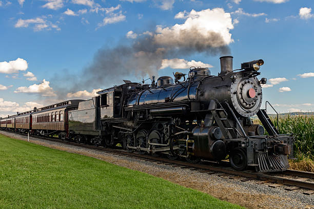
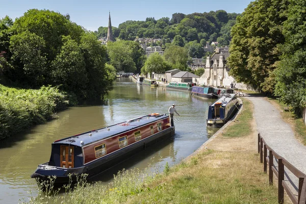

Revolução nos Transportes
A revolução nos transportes, impulsionada pelo desenvolvimento de ferrovias e barcos a vapor, transformou a sociedade do século XIX, conectando regiões e impulsionando o comércio global. Essa inovação tecnológica não apenas acelerou a movimentação de pessoas e mercadorias, mas também facilitou a expansão da Revolução Industrial e o crescimento das cidades.
🚂 Trens e 🛥️ Barcos
Aqui vamos mostrar os primeiros Trens e Barcos que surgiram nessa Revolução
Saiba mais🌉 Canais e 🛣️ Estradas
Aqui vamos mostrar os primeiros Canais e as Estradas que surgiram nessa Revolução
Saiba mais